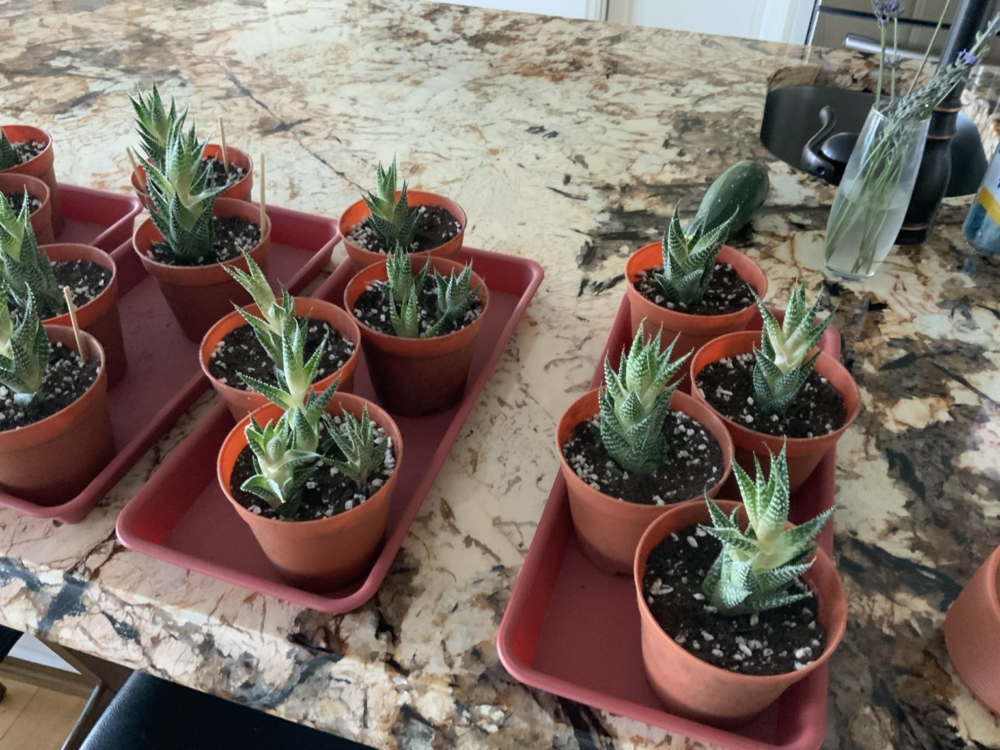
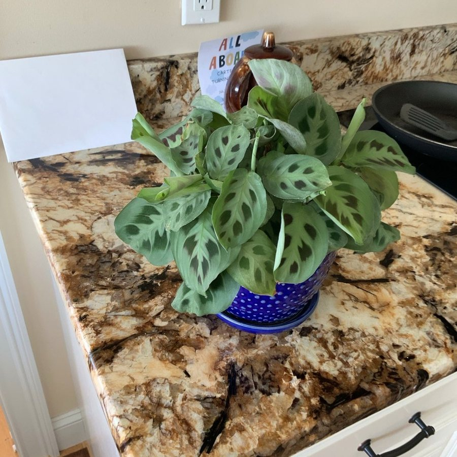
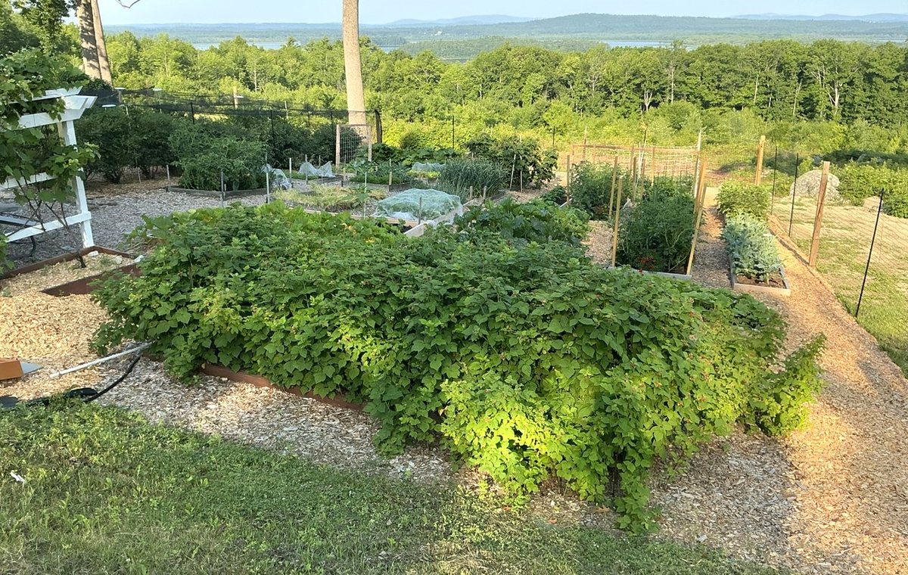
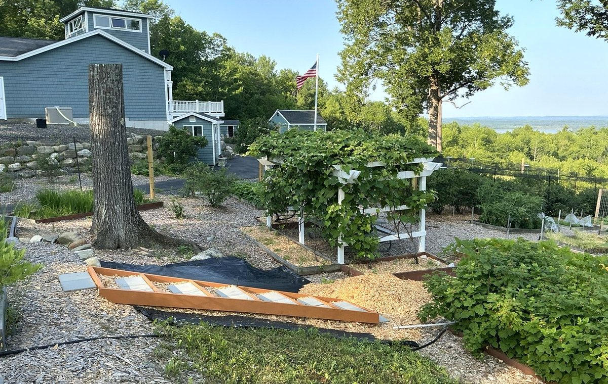
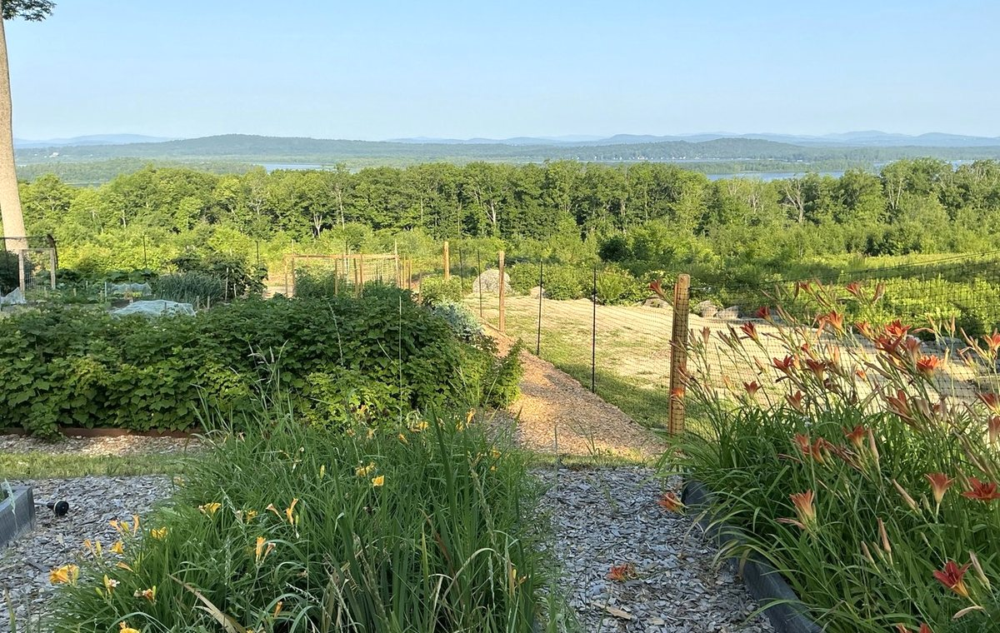
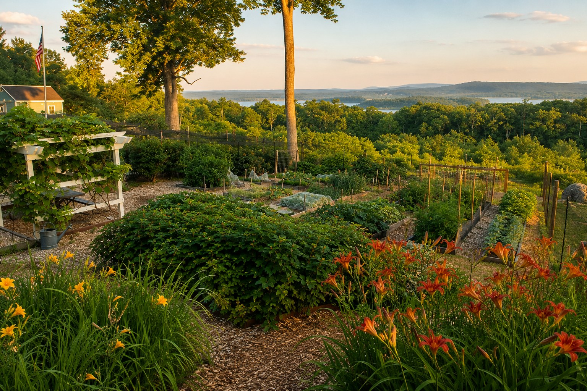
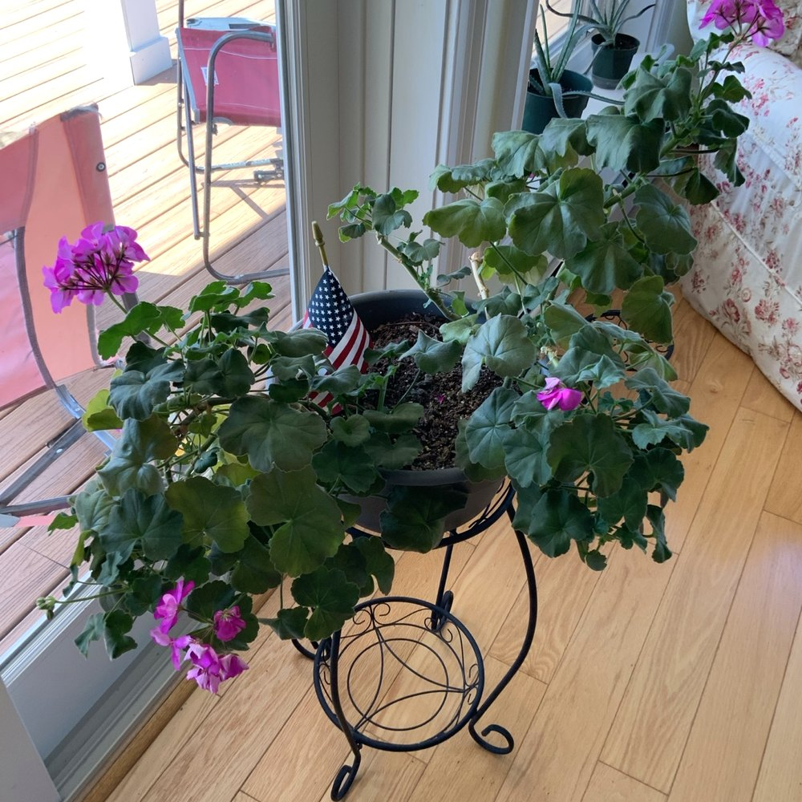
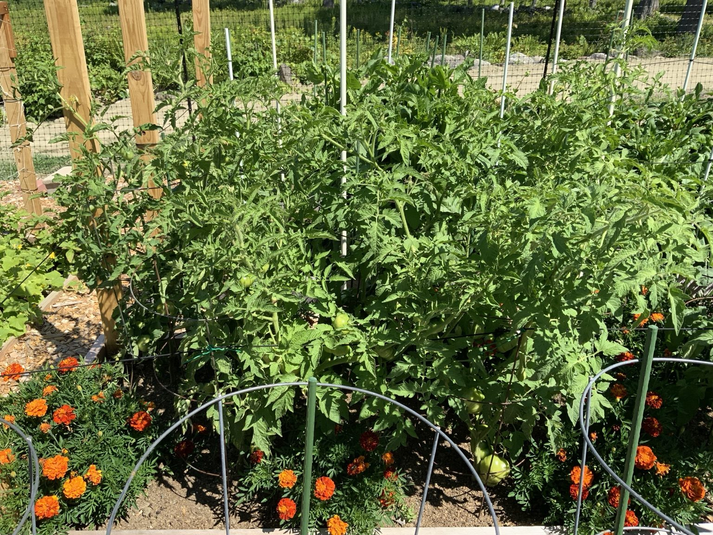

Today’s Garden
- Garlic harvested July 26: keep curing in shade with strong airflow.
- Harvest Detroit beets as they reach about 2–3 inches.
- Watch potato vines for natural yellowing and die-back.
- Inspect squash and pumpkin leaves for eggs and cucumber beetles.
Wayne Weather
Check TodayTemperatureCurrent forecast
Rain ChanceBefore watering
Sunrise / SunsetDaylight hours
First FrostTrack in fall
Now included
A true photo garden journal
The repotted Zebra Haworthia mother plant and pups now have a complete photo timeline. The journal also records garlic, beets, blueberries, blueberry propagation, jade pruning, and future progress photos.
Open Garden Journal See Haworthia & Pups


New photo journal
July 2026 Garden Updates
See the newest photographs of the tomatoes, peppers, beets, garlic harvest and curing, blueberries, flowers, Zebra Haworthia propagation, blueberry cuttings, and the summer landscape.
Open the New Photo Journal


Explore the Garden
Browse by plant type.

Indoor PlantsHouseplants and indoor care

Vegetable GardenFresh vegetables and herbs

Fruit & BerriesSweet harvests from the garden

FlowersAnnuals and perennials

Trees & ShrubsLong-term landscape care
Garden Highlights
Garden at a Glance
Total Plants43+
House Plants13
Vegetables14
Flowers9
Fruit Crops5
Trees & Shrubs2+
Plant of the Week

Geranium
A cheerful favorite that rewards regular deadheading with blooms throughout the season.
View PlantThis Week in the Garden



Upcoming Tasks
- Check garlic curing progress in about two weeks.
- Harvest tomatoes, peppers, beans, zucchini and berries often.
- Inspect squash leaves for eggs, beetles and vine damage.
- Photograph harvests and record yields in the journal.